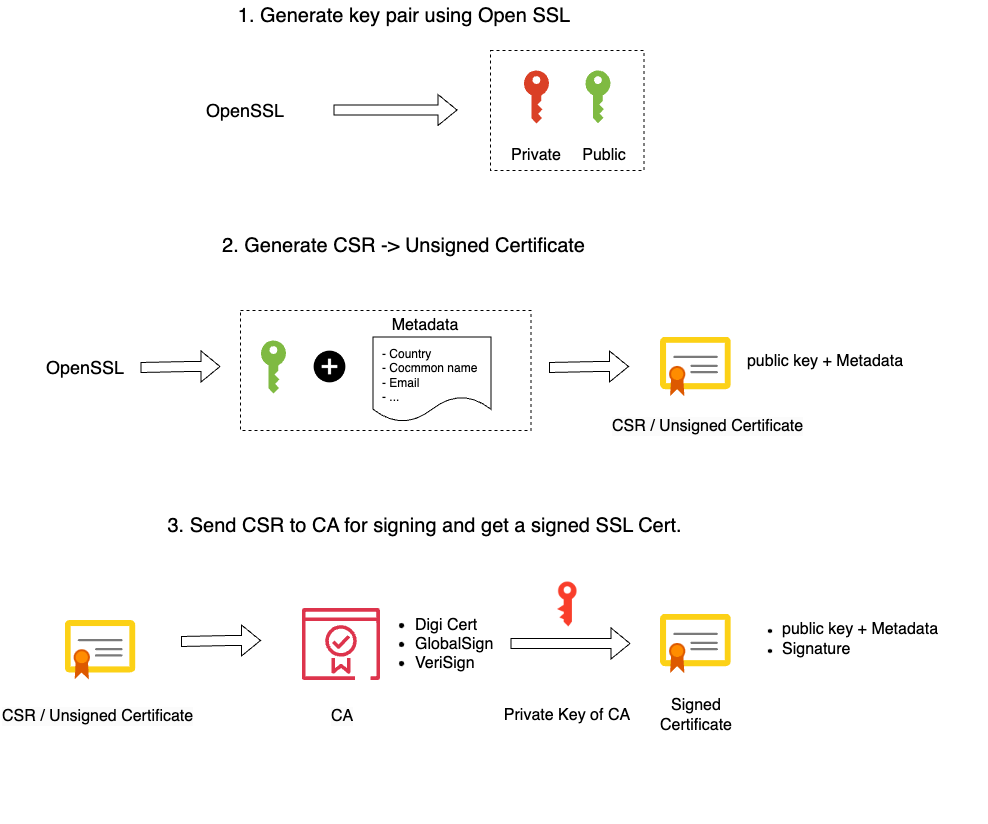
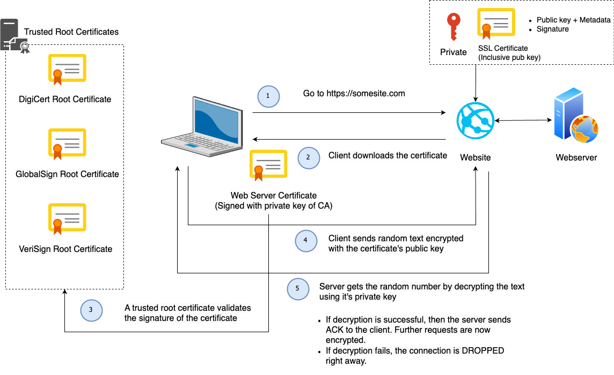
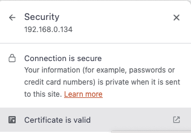

Securing the frontend
The frontend is what we use to login into our system. The Zabbix frontend will connect to our Zabbix server and our database. But we also send information from our laptop to the frontend. It's important that when we enter our credentials that we can do this in a safe way. So it makes sense to make use of certificates and one way to do this is by making use of Self-Signed certificates.
To give you a better understanding of why your browser will warn you when using self signed certificates, we have to know that when we request an SSL certificate from an official Certificate Authority (CA) that you submit a Certificate Signing request (CSR) to them. They in return provide you with a Signed SSL certificate. For this they make use of their root certificate and private key. Our browser comes with a copy of the root certificate (CA) from various authorities or it can access it from the OS. This is why our self signed certificates are not trusted by our browser, we don't have any CA validation. Our only workaround is to create our own root certificate and private key.
Understanding the concepts
How to create an SSL certificate

How SSL works - Client - Server flow

Note
Borrowed the designs from https://www.youtube.com/watch?v=WqgzYuHtnIM this video explains well how SSL works.
Securing the frontend with self signed Certificates
To configure this there are a few steps that we need to follow:
- Generate a private key for the CA ( Certificate Authority )
- Generate a root certificate
- Generating CA-Authenticated Certificates
- Generate a Certificate Signing Request (CSR)
- Generate an X509 V3 certificate extension configuration file
- Generate the certificate using our CSR, the CA private key, the CA certificate,
and the config file
- Copy the SSL certificates to our Virtual Host
- Adapt your Nginx Zabbix config
Generate a private key for the CA
First step is to make a folder named SSL so we can create our certificates and safe them:
Let's explain all the options;
- openssl : The tool to use the OpenSSL library, this library provides us with cryptographic functions and utilities.
- out myCA.key : This part of the command specifies the output file name for the generated private key.
- name prime256v1: Name of the elliptic curve; X9.62/SECG curve over a 256 bit prime field
- ecparam: This command is used to manipulate or generate EC parameter files.
- genkey: This option will generate a EC private key using the specified parameters.
Generate a Root Certificate
Let's explain all the options;
- openssl: The command-line tool for OpenSSL.
- req: This command is used for X.509 certificate signing request (CSR) management.
- x509: This option specifies that a self-signed certificate should be created.
- new: This option is used to generate a new certificate.
- nodes: This option indicates that the private key should not be encrypted. It will generates a private key without a passphrase, making it more convenient but potentially less secure.
- key myCA.key: This specifies the private key file (myCA.key) to be used in generating the certificate.
- sha256: This option specifies the hash algorithm to be used for the certificate. In this case, SHA-256 is chosen for stronger security.
- days 1825: This sets the validity period of the certificate in days. Here, it’s set to 1825 days (5 years).
- out myCA.pem: This specifies the output file name for the generated certificate. In this case, “myCA.pem.”
The information you enter is not so important but it's best to fill it in as good as possible. Just make sure you enter for CN you IP or DNS.
You are about to be asked to enter information that will be incorporated
into your certificate request.
What you are about to enter is what is called a Distinguished Name or a DN.
There are quite a few fields but you can leave some blank
For some fields there will be a default value,
If you enter '.', the field will be left blank.
-----
Country Name (2 letter code) [XX]:BE
State or Province Name (full name) []:vlaams-brabant
Locality Name (eg, city) [Default City]:leuven
Organization Name (eg, company) [Default Company Ltd]:
Organizational Unit Name (eg, section) []:
Common Name (eg, your name or your server's hostname) []:192.168.0.134
Email Address []:
Generating CA-Authenticated Certificates
It's probably good practice to use de dns name of your website in the name of the private key. As we use in this case no DNS but an IP address I will use the fictive dns zabbix.mycompany.internal.
Generate a Certificate Signing Request (CSR)
You will be asked the same set of questions as above. Once again your answers hold minimal significance and in our case no one will inspect the certificate so they matter even less.
You are about to be asked to enter information that will be incorporated
into your certificate request.
What you are about to enter is what is called a Distinguished Name or a DN.
There are quite a few fields but you can leave some blank
For some fields there will be a default value,
If you enter '.', the field will be left blank.
-----
Country Name (2 letter code) [XX]:BE
State or Province Name (full name) []:vlaams-brabant
Locality Name (eg, city) [Default City]:leuven
Organization Name (eg, company) [Default Company Ltd]:
Organizational Unit Name (eg, section) []:
Common Name (eg, your name or your server's hostname) []:192.168.0.134
Email Address []:
Please enter the following 'extra' attributes
to be sent with your certificate request
A challenge password []:
An optional company name []:
Generate an X509 V3 certificate extension configuration file.
Add the following lines in your certificate extension file. Replace IP or DNS with your own values.
authorityKeyIdentifier=keyid,issuer
basicConstraints=CA:FALSE
keyUsage = digitalSignature, nonRepudiation, keyEncipherment, dataEncipherment
subjectAltName = @alt_names
[alt_names]
IP.1 = 192.168.0.133
#DNS.1 = MYDNS (You can use DNS if you have a dns name if you use IP then use the
above line)
Generate the certificate using our CSR, the CA private key, the CA certificate,
and the config file
openssl x509 -req -in zabbix.mycompany.internal.csr -CA myCA.pem -CAkey myCA.key \
-CAcreateserial -out zabbix.mycompany.internal.crt -days 825 -sha256 -extfile zabbix.mycompany.internal.ext
Copy the SSL certificates to our Virtual Host
cp zabbix.mycompany.internal.crt /etc/pki/tls/certs/.
cp zabbix.mycompany.internal.key /etc/pki/tls/private/.
Import the CA in Linux (RHEL)
We need to update the CA certificate’s, run the below command to update the CA certs.
Import the CA in OSX
- Open the macOS Keychain app.
- Navigate to File > Import Items
- Choose your private key file (i.e., myCA.pem)
- Search for the “Common Name” you provided earlier.
- Double-click on your root certificate in the list.
- Expand the Trust section.
- Modify the “When using this certificate:” dropdown to “Always Trust”.
- Close the certificate window.
Import the CA in Windows
- Open the “Microsoft Management Console” by pressing Windows + R, typing mmc, and clicking Open.
- Navigate to File > Add/Remove Snap-in.
- Select Certificates and click Add.
- Choose Computer Account and proceed by clicking Next.
- Select Local Computer and click Finish.
- Click OK to return to the MMC window.
- Expand the view by double-clicking Certificates (local computer).
- Right-click on Certificates under “Object Type” in the middle column, select All Tasks, and then Import.
- Click Next, followed by Browse. Change the certificate extension dropdown next to the filename field to All Files (.) and locate the myCA.pem file.
- Click Open, then Next.
- Choose “Place all certificates in the following store.” with “Trusted Root Certification Authorities store” as the default. Proceed by clicking Next, then Finish, to finalize the wizard.
- If all went well you should find your certificate under Trusted Root Certification Authorities > Certificates
Warning
You also need to import the myCA.crt file in your OS we are not an official CA so we have to import it in our OS and tell it to trust this Certificate. This action depends on the OS you use.
As you are using OpenSSL, you should also create a strong Diffie-Hellman group, which is used in negotiating Perfect Forward Secrecy with clients. You can do this by typing:
Adapt your Nginx Zabbix config
Add the following lines to your Nginx configuration, modifying the file paths as needed. Replace the the already existing lines with port 80 with this configuration. This will enable SSL and HTTP2.
Adapt the Nginx config
Red Hat
server {
listen 443 http2 ssl;
listen [::]:443 http2 ssl;
server_name <ip qddress>;
ssl_certificate /etc/ssl/certs/zabbix.mycompany.internal.crt;
ssl_certificate_key /etc/pki/tls/private/zabbix.mycompany.internal.key;
ssl_dhparam /etc/ssl/certs/dhparam.pem;
To redirect traffic from port 80 to 443 we can add the following lines above our https block:
UbuntuAdapt your Apache Zabbix config
Restart all services and allow https traffic
systemctl restart php-fpm.service
systemctl restart nginx
firewall-cmd --add-service=https --permanent
firewall-cmd --reload
When we go to our url http://<IP or DNS>/ we get redirected to our https:// page and when we check we can see that our site is secure:

Note
- To be even more secure have a loot at https://cipherlist.eu/ this page maintains a list of strong ciphers that you can use so secure your Nginx even more.
- You can test your nginx config with 'nginx -t' before you restart.
- For HTTP/2 to work you need at least nginx 1.9.5 or later
Securing the Frontend with Let's Encrypt on Nginx
Creating a certificate with Let's Encrypt is quite easy the only thing you need is a domain. With a valid dns record set. Once this is in place you can with a few command in place add SSL to your website.
Setup Let's Encrypt with a DNS server
You have a DNS server and everything is properly configured, configuration this is going to be easy.
dnf install epel-release
dnf install certbot python3-certbot-nginx
# Make sure you have added your domain in the file /etc/nginx/conf.d/zabbix.com
# rename the file
mv /etc/nginx/conf.d/zabix.conf /etc/nginx/conf.d/<yourdomain.com>
# run certbot replace yourdomain.com with your own domain
certbot --nginx -d yourdomain.com -d www.yourdomain.com
This will install the certificates automatic in your configuration file. In case you had not renamed your file with the domain name you have alter the config file yourself. You can take a look for an example to the next topic.
Setup Let;s encrypt without local a DNS server
In case you like to test this at home it's a bit more complex if you don't have a DNS server at home but still possible with DNS-01 if you have bought a domain and are able to configure the TXT records for this domain. In this case we can use get.acme.
# Install the needed packages
sudo dnf install epel-release
sudo dnf install certbot python3-certbot-nginx
sudo dnf install -y tar gzip openssl cronie
sudo dnf install -y bind-utils # gives `dig`
# Install the acme script and add it to you path
curl https://get.acme.sh | sh
exec bash
acme.sh --version
# Activate crond and setup the certificate.
sudo systemctl enable --now crond
acme.sh --set-default-ca --server letsencrypt
acme.sh --issue -d <mydomain.com> -d '*.<mydomain.com>' --dns --yes-I-know-dns-manual-mode-enough-go-ahead-please
# The script had provided you with 2 TXT records add them to your domain and
# check if they are properly configured. It can take a few minutes before other
# DNS servers pickup the config change.
dig +short TXT _acme-challenge.<mydomain.com> @8.8.8.8
# Try to renew the certificate and copy it to your webserver
acme.sh --renew -d <mydomain.com> --ecc --dns --yes-I-know-dns-manual-mode-enough-go-ahead-please
sudo mkdir -p /etc/ssl/<mydomain>
acme.sh --install-cert -d <mydomain.com> --ecc --key-file /etc/ssl/<mydomain>/site.key --fullchain-file /etc/ssl/<mydomain>/site.fullchain.pem --reloadcmd
Next step is to alter your NGINX config and open the firewall on port 443
# Alter your NGINX config
vi /etc/nginx/conf.d/zabbix.conf
server {
listen 443 ssl;
server_name zabbix.mydoamin.com;
ssl_certificate /etc/ssl/mydomain/site.fullchain.pem;
ssl_certificate_key /etc/ssl/mydomain/site.key;
ssl_protocols TLSv1.2 TLSv1.3;
ssl_ciphers HIGH:!aNULL:!MD5;
# Add a forward from port 80 to 443
vi /etc/nginx/conf.d/no-ssl-zabbix.conf
server{
listen 80;
return 301 https://$host$request_uri?;
}
You can now browse to the url zabbix.mydomain.com and you should have a working certificate.
Note
You should probably add a bit more security to your webserver this is only the bare minimum to make ssl working, A good place to start is probably https://cipherlist.eu/